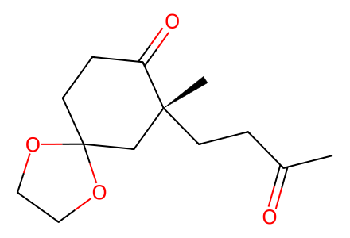
CC(=O)CC[C@]1(C)CC2(CCC1=O)OCCO2Main-article schemes1/2: complete displayed route to revised mangicolD, original-sidechain controls and triacetate32. SI unavailable; upstream feeds and undrawn side products remain bounded. Facts compiled deterministically; independent review pending.
完整 JSON · 逐步 CSV · 路线序列 · SDF · HRMS 核对
| 事件 | 分子连接 | 报告产率 | Canonical reaction SMILES |
|---|---|---|---|
| A01 | 14 → 14-Wittig | 14-Wittig: 63% | CC(=O)CC[C@]1(C)CC2(CCC1=O)OCCO2>>C=C(C)CC[C@]1(C)CC2(CCC1=O)OCCO2 |
| A02 | 14-Wittig → 15 | 15: 90% | C=C(C)CC[C@]1(C)CC2(CCC1=O)OCCO2>>C=C(C)CC[C@]1(C)CC2(CC=C1OS(=O)(=O)C(F)(F)F)OCCO2 |
| A03 | 15 → 16 | 16: 70% | C=C(C)CC[C@]1(C)CC2(CC=C1OS(=O)(=O)C(F)(F)F)OCCO2>>COC(=O)C[C@@]1(C)CC[C@]2(C)CC3(CC=C12)OCCO3 |
| A04 | 16 → 17 | 17: 60% | COC(=O)C[C@@]1(C)CC[C@]2(C)CC3(CC=C12)OCCO3>>COC(=O)C[C@@]1(C)CC[C@]2(C)CC(=O)C=C[C@@H]21 |
| A05 | 17 → 18 | 18: 76% | COC(=O)C[C@@]1(C)CC[C@]2(C)CC(=O)C=C[C@@H]21>>COC(=O)C[C@@]1(C)CC[C@]2(C)CC(=O)C(I)=C[C@H]12 |
| A06 | 18 + 20 → 19 | 19: 81% | COC(=O)C[C@@]1(C)CC[C@]2(C)CC(=O)C(I)=C[C@H]12.C[Si](C)(C)C#CC[CH2][Mg][Br]>>COC(=O)C[C@@]1(C)CC[C@]2(C)CC(=O)C(CCC#C[Si](C)(C)C)=C[C@H]12 |
| A07 | 19 + 20 → 21 | 21: 94% | COC(=O)C[C@@]1(C)CC[C@]2(C)CC(=O)C(CCC#C[Si](C)(C)C)=C[C@H]12.C[Si](C)(C)C#CC[CH2][Mg][Br]>>COC(=O)C[C@@]1(C)CC[C@]2(C)CC(O[Si](C)(C)C)=C(CCC#C[Si](C)(C)C)[C@@H](CCC#C[Si](C)(C)C)[C@H]12 |
| A08 | 21 → 22 | 22: 63% | COC(=O)C[C@@]1(C)CC[C@]2(C)CC(O[Si](C)(C)C)=C(CCC#C[Si](C)(C)C)[C@@H](CCC#C[Si](C)(C)C)[C@H]12>>C#CCC[C@]12C(=C)CC[C@H]1[C@@H]1[C@@](C)(CC(=O)OC)CC[C@]1(C)CC2=O |
| A09 | 22 → 23 | 23: 87% | C#CCC[C@]12C(=C)CC[C@H]1[C@@H]1[C@@](C)(CC(=O)OC)CC[C@]1(C)CC2=O>>C=C1CC[C@H]2[C@@H]3[C@@](C)(CC(=O)OC)CC[C@]3(C)C[C@]3(O)C(=C)CC[C@]123 |
| A10 | 23 → 24 | 24: 84% | C=C1CC[C@H]2[C@@H]3[C@@](C)(CC(=O)OC)CC[C@]3(C)C[C@]3(O)C(=C)CC[C@]123>>COC(=O)C[C@@]1(C)CC[C@]2(C)C[C@]3(O)[C@@H](C)CC[C@@]34[C@@H](C)CC[C@H]4[C@H]12 |
| A11 | 24 → 25 | not reported | COC(=O)C[C@@]1(C)CC[C@]2(C)C[C@]3(O)[C@@H](C)CC[C@@]34[C@@H](C)CC[C@H]4[C@H]12>>C[C@H]1CC[C@@]23C1=C[C@@]1(C)CC[C@](C)(CC=O)[C@H]1[C@@H]2CC[C@@H]3C |
| B01 | 25 + 27 → 26 + 17-epi-26 | not reported | COc1ccc(COC/C(C)=C/I)cc1.C[C@H]1CC[C@@]23C1=C[C@@]1(C)CC[C@](C)(CC=O)[C@H]1[C@@H]2CC[C@@H]3C>>COc1ccc(COC/C(C)=C/C(O)C[C@@]2(C)CC[C@]3(C)C=C4[C@@H](C)CC[C@@]45[C@@H](C)CC[C@H]5[C@H]23)cc1.COc1ccc(COC/C(C)=C/C(O)C[C@@]2(C)CC[C@]3(C)C=C4[C@@H](C)CC[C@@]45[C@@H](C)CC[C@H]5[C@H]23)cc1 |
| B02 | 26 + 17-epi-26 → original-polyol-1 + original-polyol-2 + original-polyol-3 + original-polyol-4 | not reported | COc1ccc(COC/C(C)=C/C(O)C[C@@]2(C)CC[C@]3(C)C=C4[C@@H](C)CC[C@@]45[C@@H](C)CC[C@H]5[C@H]23)cc1.COc1ccc(COC/C(C)=C/C(O)C[C@@]2(C)CC[C@]3(C)C=C4[C@@H](C)CC[C@@]45[C@@H](C)CC[C@H]5[C@H]23)cc1>>C[C@H]1CC[C@@]23C1=C[C@@]1(C)CC[C@](C)(CC(O)C(O)C(C)(O)CO)[C@H]1[C@@H]2CC[C@@H]3C.C[C@H]1CC[C@@]23C1=C[C@@]1(C)CC[C@](C)(CC(O)C(O)C(C)(O)CO)[C@H]1[C@@H]2CC[C@@H]3C.C[C@H]1CC[C@@]23C1=C[C@@]1(C)CC[C@](C)(CC(O)C(O)C(C)(O)CO)[C@H]1[C@@H]2CC[C@@H]3C.C[C@H]1CC[C@@]23C1=C[C@@]1(C)CC[C@](C)(CC(O)C(O)C(C)(O)CO)[C@H]1[C@@H]2CC[C@@H]3C |
| C01 | 25 + 29 → 30 + 17-epi-30 | not reported | COc1ccc(COC/C(C)=C\I)cc1.C[C@H]1CC[C@@]23C1=C[C@@]1(C)CC[C@](C)(CC=O)[C@H]1[C@@H]2CC[C@@H]3C>>COc1ccc(COC/C(C)=C\[C@@H](O)C[C@@]2(C)CC[C@]3(C)C=C4[C@@H](C)CC[C@@]45[C@@H](C)CC[C@H]5[C@H]23)cc1.COc1ccc(COC/C(C)=C\[C@H](O)C[C@@]2(C)CC[C@]3(C)C=C4[C@@H](C)CC[C@@]45[C@@H](C)CC[C@H]5[C@H]23)cc1 |
| C02 | 30 → 31 | 31: 78% | COc1ccc(COC/C(C)=C\[C@H](O)C[C@@]2(C)CC[C@]3(C)C=C4[C@@H](C)CC[C@@]45[C@@H](C)CC[C@H]5[C@H]23)cc1>>COc1ccc(COC[C@](C)(O)[C@H](O)[C@H](O)C[C@@]2(C)CC[C@]3(C)C=C4[C@@H](C)CC[C@@]45[C@@H](C)CC[C@H]5[C@H]23)cc1 |
| C03 | 31 → 6a | 6a: 95% | COc1ccc(COC[C@](C)(O)[C@H](O)[C@H](O)C[C@@]2(C)CC[C@]3(C)C=C4[C@@H](C)CC[C@@]45[C@@H](C)CC[C@H]5[C@H]23)cc1>>C[C@H]1CC[C@@]23C1=C[C@@]1(C)CC[C@](C)(C[C@@H](O)[C@@H](O)[C@@](C)(O)CO)[C@H]1[C@@H]2CC[C@@H]3C |
| C04 | 6a → 32 | 32: 76% | C[C@H]1CC[C@@]23C1=C[C@@]1(C)CC[C@](C)(C[C@@H](O)[C@@H](O)[C@@](C)(O)CO)[C@H]1[C@@H]2CC[C@@H]3C>>CC(=O)OC[C@](C)(O)[C@H](OC(C)=O)[C@@H](C[C@@]1(C)CC[C@]2(C)C=C3[C@@H](C)CC[C@@]34[C@@H](C)CC[C@H]4[C@H]12)OC(C)=O |

CC(=O)CC[C@]1(C)CC2(CCC1=O)OCCO2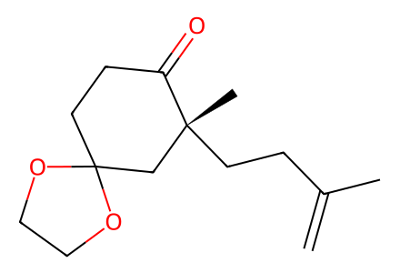
C=C(C)CC[C@]1(C)CC2(CCC1=O)OCCO2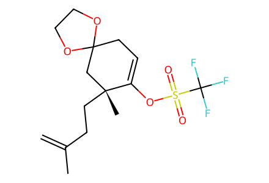
C=C(C)CC[C@]1(C)CC2(CC=C1OS(=O)(=O)C(F)(F)F)OCCO2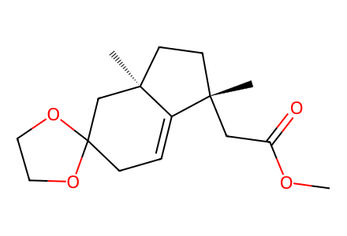
COC(=O)C[C@@]1(C)CC[C@]2(C)CC3(CC=C12)OCCO3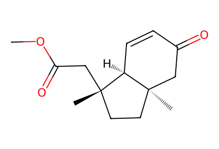
COC(=O)C[C@@]1(C)CC[C@]2(C)CC(=O)C=C[C@@H]21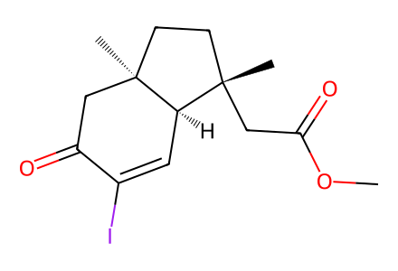
COC(=O)C[C@@]1(C)CC[C@]2(C)CC(=O)C(I)=C[C@H]12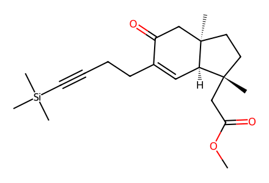
COC(=O)C[C@@]1(C)CC[C@]2(C)CC(=O)C(CCC#C[Si](C)(C)C)=C[C@H]12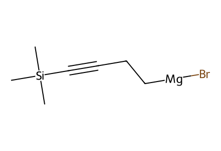
C[Si](C)(C)C#CC[CH2][Mg][Br]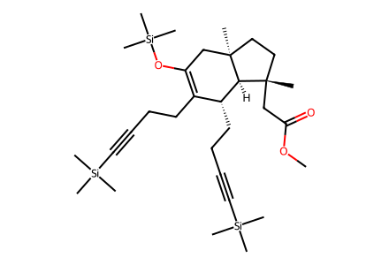
COC(=O)C[C@@]1(C)CC[C@]2(C)CC(O[Si](C)(C)C)=C(CCC#C[Si](C)(C)C)[C@@H](CCC#C[Si](C)(C)C)[C@H]12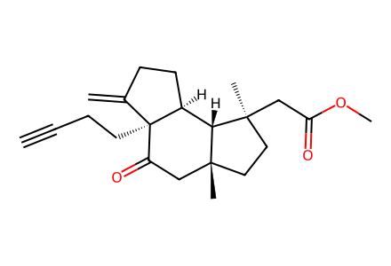
C#CCC[C@]12C(=C)CC[C@H]1[C@@H]1[C@@](C)(CC(=O)OC)CC[C@]1(C)CC2=O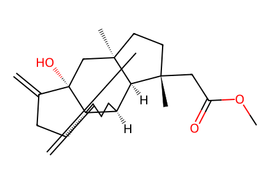
C=C1CC[C@H]2[C@@H]3[C@@](C)(CC(=O)OC)CC[C@]3(C)C[C@]3(O)C(=C)CC[C@]123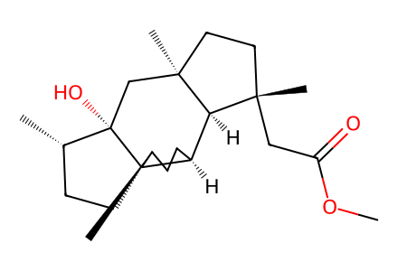
COC(=O)C[C@@]1(C)CC[C@]2(C)C[C@]3(O)[C@@H](C)CC[C@@]34[C@@H](C)CC[C@H]4[C@H]12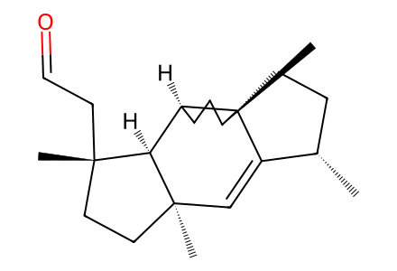
C[C@H]1CC[C@@]23C1=C[C@@]1(C)CC[C@](C)(CC=O)[C@H]1[C@@H]2CC[C@@H]3C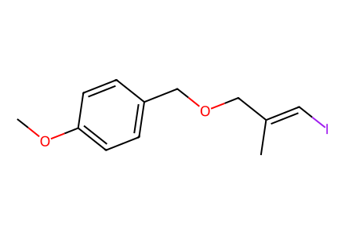
COc1ccc(COC/C(C)=C/I)cc1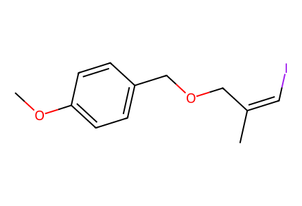
COc1ccc(COC/C(C)=C\I)cc1
COc1ccc(COC/C(C)=C/C(O)C[C@@]2(C)CC[C@]3(C)C=C4[C@@H](C)CC[C@@]45[C@@H](C)CC[C@H]5[C@H]23)cc1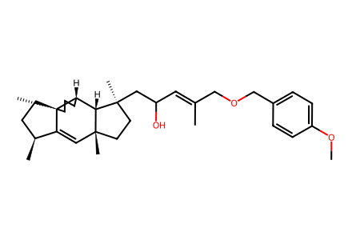
COc1ccc(COC/C(C)=C/C(O)C[C@@]2(C)CC[C@]3(C)C=C4[C@@H](C)CC[C@@]45[C@@H](C)CC[C@H]5[C@H]23)cc1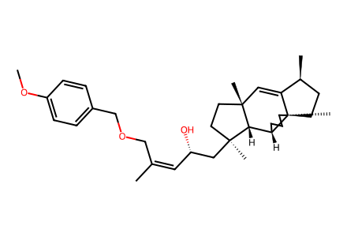
COc1ccc(COC/C(C)=C\[C@H](O)C[C@@]2(C)CC[C@]3(C)C=C4[C@@H](C)CC[C@@]45[C@@H](C)CC[C@H]5[C@H]23)cc1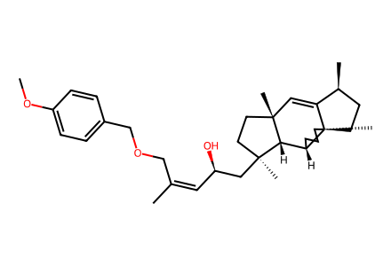
COc1ccc(COC/C(C)=C\[C@@H](O)C[C@@]2(C)CC[C@]3(C)C=C4[C@@H](C)CC[C@@]45[C@@H](C)CC[C@H]5[C@H]23)cc1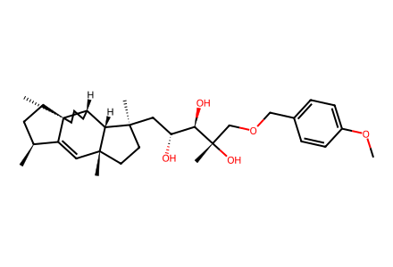
COc1ccc(COC[C@](C)(O)[C@H](O)[C@H](O)C[C@@]2(C)CC[C@]3(C)C=C4[C@@H](C)CC[C@@]45[C@@H](C)CC[C@H]5[C@H]23)cc1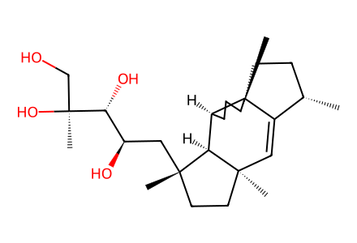
C[C@H]1CC[C@@]23C1=C[C@@]1(C)CC[C@](C)(C[C@@H](O)[C@@H](O)[C@@](C)(O)CO)[C@H]1[C@@H]2CC[C@@H]3C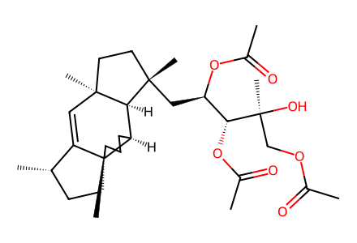
CC(=O)OC[C@](C)(O)[C@H](OC(C)=O)[C@@H](C[C@@]1(C)CC[C@]2(C)C=C3[C@@H](C)CC[C@@]34[C@@H](C)CC[C@H]4[C@H]12)OC(C)=O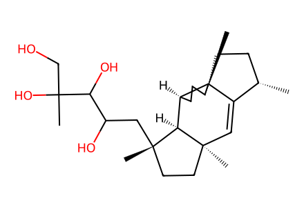
C[C@H]1CC[C@@]23C1=C[C@@]1(C)CC[C@](C)(CC(O)C(O)C(C)(O)CO)[C@H]1[C@@H]2CC[C@@H]3C
C[C@H]1CC[C@@]23C1=C[C@@]1(C)CC[C@](C)(CC(O)C(O)C(C)(O)CO)[C@H]1[C@@H]2CC[C@@H]3C
C[C@H]1CC[C@@]23C1=C[C@@]1(C)CC[C@](C)(CC(O)C(O)C(C)(O)CO)[C@H]1[C@@H]2CC[C@@H]3C
C[C@H]1CC[C@@]23C1=C[C@@]1(C)CC[C@](C)(CC(O)C(O)C(C)(O)CO)[C@H]1[C@@H]2CC[C@@H]3C